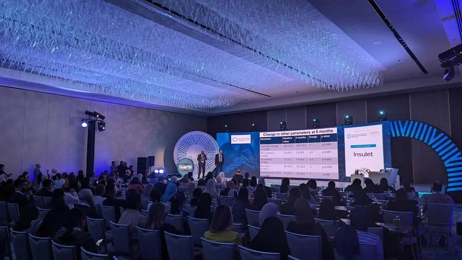
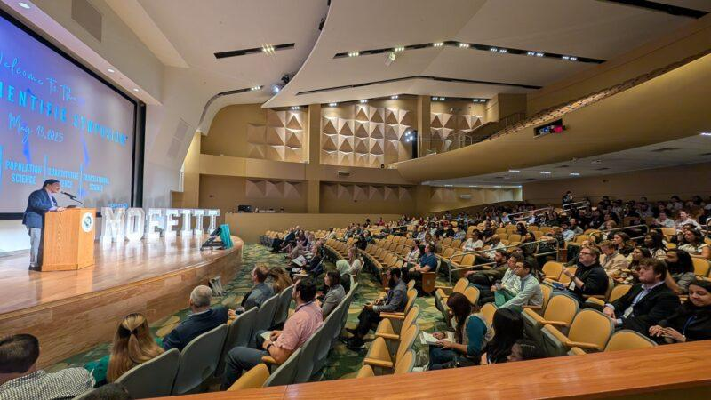
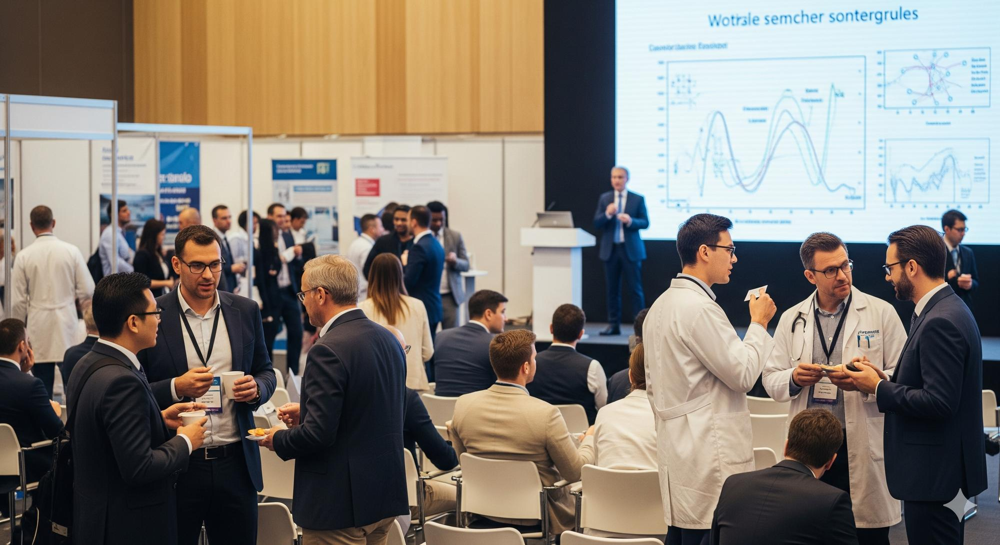

We bring together endocrinologists, diabetologists, researchers, and healthcare professionals to exchange knowledge, present research, and shape better standards of care for Type 1 diabetes and other endocrine disorders.

Endocrinology and diabetes care evolve quickly, and the professionals treating these conditions need a space to compare notes, question assumptions, and learn from research being done elsewhere in India and abroad.
Our Scientific Conferences programme creates exactly that space — structured, credible, and focused squarely on improving how Type 1 diabetes and endocrine disorders are diagnosed, treated, and managed.
Every conference is designed around a clear clinical or research goal, not just attendance numbers.

A flagship yearly gathering of endocrinologists, diabetologists, and researchers to review the year's most significant findings in Type 1 diabetes and endocrine disorder care.
Focused symposia where researchers present findings from Foundation-supported studies, patient registries, and epidemiological data collection.
Smaller, discussion-driven sessions where clinicians work through complex or unusual cases together, sharing practical treatment insights.
Select conference tracks are run jointly with our CME Programs, so attending clinicians earn continuing education credit while they learn.

Our Trust Deed calls for encouraging and supporting research related to endocrine disorders — patient registries, funded studies, and epidemiological data collection that improve treatment protocols and inform public health policy.
Conferences are where that research actually reaches the clinicians and community health workers who apply it every day.
A simple, transparent process behind every conference we run.
We start from a real clinical or research gap in endocrine care, often surfaced through our own data initiatives.
Endocrinologists, researchers, and allied health professionals are invited to present and lead discussion.
Sessions are built around presentations, open case discussion, and Q&A — not one-way lectures.
Findings and takeaways are documented and shared, in line with our commitment to research that benefits the public.
Every conference strengthens the network of people working on endocrine health across India.
Endocrinologists, diabetologists, and researchers taking part in structured knowledge-sharing sessions.
Foundation-supported studies and data initiatives brought directly to a clinical audience.
Sessions designed to include practitioners from rural and under-served regions, not just major hospitals.
Whether you're a clinician, researcher, or institution interested in our next Scientific Conference, we'd like to hear from you.
Get in Touch